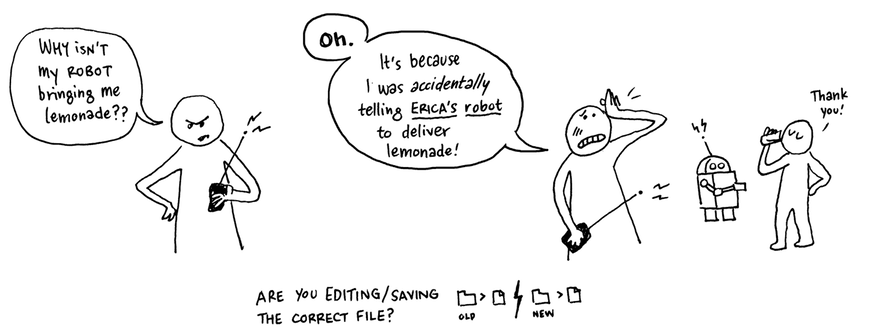
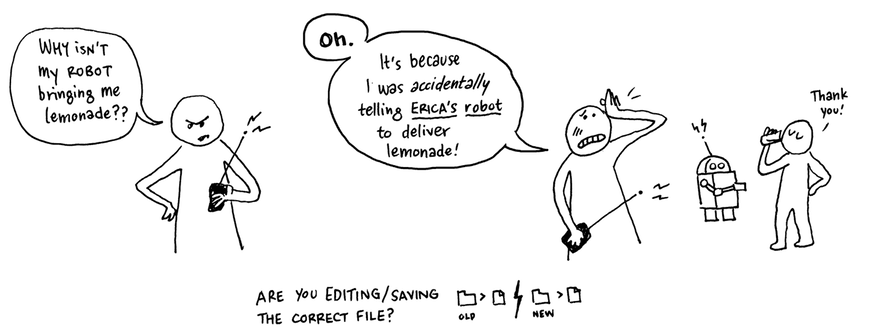
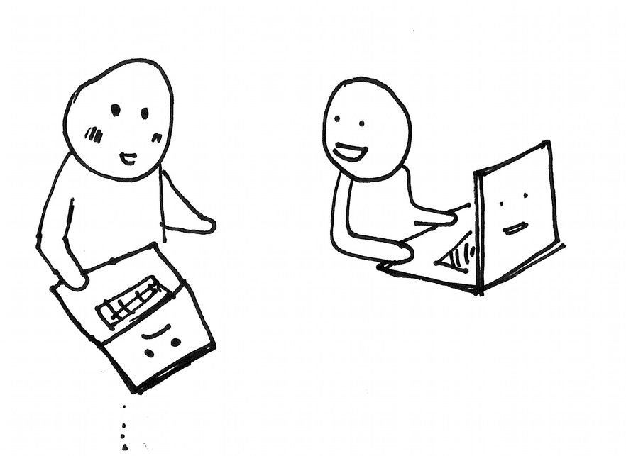

la diversión de Processing x la excentricidad de JavaScript
la simplicidad de Processing x la flexibilidad de JavaScript
la intuición de Processing x el poder de JavaScript
la creatividad de Processing x el dinamismo de JavaScript
la comunidad de Processing x la comunidad de JavaScript
el poder de Processing x el alcance de JavaScript

This is a field guide for debugging for everyone—whether you are beginning to code or whether you have been coding for a long time, this guide breaks down the mysterious process of solving problems.
0. Debugging is a Creative Act
At all levels, programmers encounter bugs and will often spend more time debugging than actually programming the application. You can expect to spend a lot of time doing this and so it is important to develop good strategies for identifying and working through bugs as you learn to program in p5.js.
A bug is a gap between what you think your system is doing, and what it is actually doing. Clay Shirky aptly describes a bug as "the moment when there is both a technical problem with your code as well as a problem with your mental picture of what is happening in your code."

You think you are telling the computer one thing, but it is doing something else. It may also be crashing or throwing errors. In order to close the gap, you must investigate.
When you are working on a project, you may play many different roles. You are an architect when designing and planning your program, an engineer when you are developing it. Then you will be an explorer, discovering the problems and errors and testing it in all the situations in which it needs to run. You are trying to find out where it might break. Finally, when debugging you are a detective, trying to figure out how and why things broke.


So how can you become a good detective and debug your program? Here are the ten steps that can help you become a good code sleuth.
1. Change Perspectives.
Don't panic.
When you encounter a bug that you do not know how to solve, stop, pause and take a deep breath. Stand up, say hi to the dog, take a walk or if it's late go get some sleep. When you are frustrated, tired and upset, you are not in a good frame of mind to learn or solve a problem.
To find your errors you will need to change perspectives and become the detective. The goal is to find out what the program IS doing, rather than why it's not doing what it's supposed to. We need to get the computer to show us what it's doing.
The clues are in the values of variables and flow of program.

2. Observe the problem
Walk someone through the issue even if they themselves do not know how to program. If no one is around, draft an email explaining what you have done and breaking down what the problem is.

You probably won't need to actually send this email as often the act of writing it will help you to locate and identify what you need to do next. Some programmers have even been known to explain their problem to a friendly inanimate object like a rubber ducky.

This is also a good time to add comments to your code that tell you exactly what each of your functions is doing. Some coders also print out their code (or a section of it) and go through it line by line, tracing the path of variables and making notes.

3. Before you start...
Before doing anything, save a copy of your code that you can go back to. While debugging you are likely to introduce other problems, break things or accidentally delete good work.

You don't want to make bigger bugs in the process of debugging.

If you make a mistake or your problem gets more worse, you can always UNDO or revert back to your saved file.

You can try version control such as Github.

Write a list of what you are trying, so you can keep track of what still needs to be checked. Be methodical, it will save you a lot of time in the long run.
Only ever change one thing at a time.
 As you debug, you will be turning parts of your code on and off.
Every time you make a change, test your program. If you make multiple changes before testing, you will not know which change has what effect and are likely to break things further.
As you debug, you will be turning parts of your code on and off.
Every time you make a change, test your program. If you make multiple changes before testing, you will not know which change has what effect and are likely to break things further.
4. Check the basics
Many bugs end up being very basic mistakes, equivalent to forgetting to plug in the power cord. These mistakes are so obvious they are often invisible. Check the dumb stuff like...
- Are you editing the file that you are actually running (and not, for example, editing the local file, and looking at a different file on the server)?
- Are all of your external files where you think they are?
- Are your file dependencies correct?
- Are there any typos in your paths?
- Check your server? etc.
 

5. Black boxes
A black box describes any part of your system you do not understand the inner workings of. For example, a library or perhaps a function that you have not written for yourself. Systematically take out each black box one-by-one and run your program. This will help to see if these parts of the program contain the error.


6. Add error reporting
 Error reporting is how your program tells you what it is doing.
p5.js comes with some built-in error reporting that will tell you if you have made specific syntax errors.
Error reporting is how your program tells you what it is doing.
p5.js comes with some built-in error reporting that will tell you if you have made specific syntax errors.
It is also useful to add in your own error reporting using the console.log() function.
 To check your program flow, add in console.log() statements to the parts of your code.
Then when you look at your console you can see the order that things happen and where you encounter problems.
To check your program flow, add in console.log() statements to the parts of your code.
Then when you look at your console you can see the order that things happen and where you encounter problems.
It is also useful to add in console.log()s to print out values of variables so that you can see what they are doing.

7. Search for more help
So none of this works? There are many places you can look online to get more help.
- Do a Google search, if you have had this problem chances are many other people will have too.
- Search the Processing forum using the p5.js tag.
- Search development forums like Stack Overflow.
More general javascript resources:
- First chapter of Bocoup's and Rebecca Murphey's interactive textbook, jQuery Fundamentals.
- Mozilla's JavaScript Guide and JavaScript Reference (this is really helpful for finding all of the built-in methods for, say a String).
- Resources from the p5.js Education page.

8. Ask people
Still not working?  You can also ask people for help! They might be delighted to help you.
Send that email you wrote at the start.
Post to the Processing forum succinctly articulating your problem and what you want to know.
9. Good coding practices and how to prevent bugs!
- Do not optimize prematurely. Clear code is more important than high-performing code as you're building your program.
- Do not abstract prematurely. You don't need to make functions for things you think you're going to use multiple times...until you actually have to use it more than once.
-
Start with pseudocode as comments, then add code underneath each step.
Put console.log()s in your code as you develop (and test frequently—so if something changes, you know what you did since the last time you tested).
ALSO: start with small problems! Do one thing at a time. It's ok to make smaller sketches to test one thing (draw a star! check twitter!) and then voltron them together into a bigger sketch (draw a star that turns red when you have a notification on twitter!)

10. More resources
This guide has been inspired by several other fantastic resources on debugging when coding. Some of these are here:
- Matt Gemmel, What have you tried?
- Clay Shirky, A brief introduction to debugging
- Eric Steven Raymond, How to ask questions the smart way
- ITP Residents, 10 Tips for Debugging
- Rurouni Jones, How to ask for help on IRC